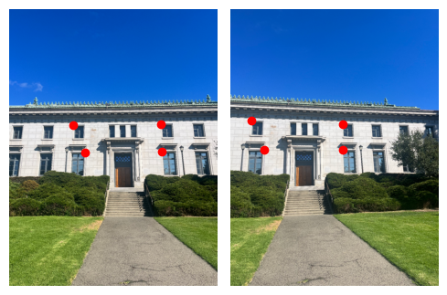

Part 2: Recovering Homographies
Before we can warp our images into alignment, we need to recover the parameters mediating this
transformation. We do this by defining a set of correspondences across the images. If we let \( p\) be the
vector of points in original image and \(p'\) be the vector in the transformed image, we can say that \( Hp
=
p'\) where H is a matrix of the following form.
$$ H = \begin{bmatrix} a & b & c \\ d & e & f \\ g & h & 1 \end{bmatrix} $$
As such, we use the correspondences to solve this matrix equation for the values of H and use this as our
project transformation. If we use too few correspondences then the system becomes unstable and we are not
provided a precise transformation. As such, we overdetermine the system and use least squares to find the
analytically optimal solution. After a bit of matrix-vector manipulation, we arrive at the system below,
where the leftmost matrix and rightmost vector are extended for each extra correspondence.
$$
\begin{bmatrix}
p_1 & p_2 & 1 & 0 & 0 & 0 & -p_1 p_1' & -p_2 p_1' \\
0 & 0 & 0 & p_1 & p_2 & 1 & -p_1 p_2' & -p_2 p_2'
\end{bmatrix}
\begin{bmatrix}
a \\
b \\
c \\
d \\
e \\
f \\
g \\
h
\end{bmatrix}
=
\begin{bmatrix}
p_1' \\
p_2'
\end{bmatrix}
$$
To this end, we write a function compute_homography(image, H) that does what is detailed above.
We use the point correspondences shown below.
| California Hall |
|  |
| Balcony |
 |
| Living Room |
 |
Project 4B: Automatic Mosaicing
Project Description
This portion of the project involves implementing automatic mosacing software. The primary components of this
process are—in very general terms—corner detection, corner choosing, corner matching, and homography
extraction. The various methods through which we will achieve these goals are detailed in their respective
sections below.
Part 6: Harris Corner Detection
Recalling what we did in part A, to construct an accurate homography between image1 and
image2, we require a set of 4 correspondences between these images. Since we are trying to
automate this entire process, the first step in this process is to generate a set of candidate
coordinate points.
The Harris Corner Detection Algorithm provides a method of generating such a set, using the eigenvalues
of
the second-moment matrix (SMM) at each pixel. Intuitively, it calculates the gradients (using sobel
filters or other similar methods)of each pixel in both the \(x\)
and \(y\) directions. It combines these gradients as shown below to create the SMM shown below. We use
the eigenvalues of this matrix, which tell us how quickly neighboring pixels change in the two principal
directions. If both of the eigenvalues of \(M_{SMM}\) are small, this likely indicates that the pixel is
contained in a flat region. Alternatively, one large eigenvalue signifies an edge and two large
eigenvalues indicate a corner.
Instead of computing the eigenvalues directly, we use a much faster corner response function shown below.
The mathematical equivalences of the above steps are shown below.
\[
I_x = \frac{\partial I}{\partial x} \quad \text{and} \quad I_y = \frac{\partial I}{\partial y}
\]
\[
M_{SMM} = \begin{bmatrix} I_x^2 & I_x I_y \\ I_x I_y & I_y^2 \end{bmatrix}
\]
\[
R = \text{det}(M_{SMM}) - k \cdot (\text{trace}(M_{SMM}))^2
\]
Depicted below are the outputs of the Harris Corner direction algorithm with different minimum distances
between points
| \(\text{min_distance} = 1\) |
\(\text{min_distance} = 10\) |
\(\text{min_distance} = 15\) |
\(\text{min_distance} = 20\) |
|
|
|
|
Notice that if we consider every pixel (\(\text{min_distance} = 1\)), then we have far too many
points
from which to find matches (if the image is 1000px x 1000px and our matching algorithm is
\(O(n^2)\), then it's on the order of \(10^{12}\) operations). However, the issue with using
\(\text{min_distance}\) to narrow down this set of points is that we are arbitrarily eliminating
points, rather than specifically preserving the "best corners" as signaled by their respective
responses.
This idea of systematically narrowing down the number of points between which to find matches is the
subject of the next section.
Part 7: Adaptive Non-Maximal Suppression (ANMS)
Adaptive Non-Maximal Suppression is an algorithm for narrowing down the search space of points on which
we will perform feature matching. The intuition and implementation behind this approach is as follows.
- For candidate point \(p_i\), we define \(r_i\) to be the largest radius such that it
has the largest response of all candidate points within \(r_i\) pixels of \(p_i\)
- If we want to retain \(n\) of the "best corners", then we can simply keep the \(n\) points with the
largest radii.
- To implement this, we can simply sort the candiate points by radii and keep the first \(n\) points.
| \( n = 500 \) |
\( n = 100 \) |
\( n = 50 \) |
|
|
|
We see that ANMS gives us well-spaced, corner-looking points most of the time.
Part 8: Feature Descriptor Extraction
Our next task on our journey to finding our homography correspondences is to find which of these points
correspond to each other across images. To this end, we extract a feature descriptor for each candidate
point as described in Multi-Image Matching using Multi-Scale Oriented Patches. To extract these
feature descriptors, we roughly follow the steps below.
- Create a 3 layer gaussian stack of the image
- Use the anti-aliased, top layer of this stack for the following steps.
- Extract a 40px x 40px section around each candiate point.
- Sample this 40px x 40px region at every 5px to obtain a 8px x 8px feature descriptor.
- Normalize this region for robustness to obtain a zero-mean, unit-variance patch.
- Flatten this 8px x 8px region into a vector for future operations.
These anti-aliased feature descriptors capture the general structure and color of a candiate point.
Feature descriptors representing three distinct textures in the image are shown below.
Part 9: Feature Matching & Lowe's Ratio
Now that we have representations with which to compare our candidate points, we can find those that are
most similar to each other. We do this using the \(L2\) norm of the difference between the vectorized
feature-descriptors of each pair of candidate points.
In order to determine whether two points correspond to each other, we use Lowe's Ratio, which states that
if the most similar candidate point is a certain percentage closer than the second closest candiate
point, then we have found a correspondence. In my implementation, I used a cutoff threshold of \(30%\)
better for the 1-nn.
Below are the feature matches found between my two pictures of California Hall. Note that though it may seem
as though the points are too clustered in the image on the left, this is correct and to-be-expected
behaviour since my camera was rotated to the right for the other photo. Thus, all feature matches should be
on the RHS of the first image.
Part 10: RANdom SAmple Consensus (RANSAC)
Now that we have identified our correspondences, we need to find the four "best" correspondences to
determine our homography. The algorithm by which we determine this is known as RANSAC. The steps of the
algorithm follow as below.
- Choose a random subset of 4 unique correspondences
- Calculate the homography determined by these 4 points
- Apply this homography to all of the correspondences, and determine whether each of these points are
"correctly mapped" to their counterparts within some threshold. If a point is correctly mapped to
its correspondence, it's called an "inlier". Alternatively, the point is called an "outlier".
- Count up the number of inliers and check if it is the largest number of inliers seen so far.
- Go back to step 1 and repeat for a few thousand iterations.
My specific implementation repeats these steps 10,000 times with a threshold of 2px to be considered an
inlier. Below are the correspondences determined by RANSAC on my images of California Hall.
Although these correspondences may not seem super intuitive (didn't use the corners of the windows,
doors, etc), when examined closely they are extremely accurate, even more so than my manual labelling—as
we will see in the next section.
Part 11: Manual vs. Automatic Homographies
With the brunt of the work behind us, we conclude by using our identified correspondeces to calculate a
homography and use it to mosaic our images. I will not go into detail on how this is done here, since it
is reduntant with Part A. The results comparing my manual mosaicing vs. our automatic approach are shown
below.
There are a couple of noteworthy things below. First, the automatic mosaicing is noticeably clearer,
indicating that our
algorithm produced more accurate correspondences than I was able to by hand. Second, note that running
this algorithm gives varied results because of the stochasticity inherent in RANSAC. Running the
automatic mosaiciing algorithm multiple times and using the more visually crisp result is advisable
|
California Hall |
Balcony |
Living Room |
| Automatic Mosaicing |
|
|
|
| Manual Mosaicing |
|
 |
|
Overall, I really enjoyed various aspects of this project, including the step-by-step approach taken to
solving our correspondence-identification problem. Furthermore, I wasn't expecting our automated algorithm
to outperform my hand-labeled correspondences, which it did.